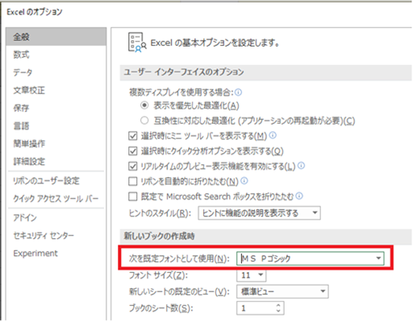
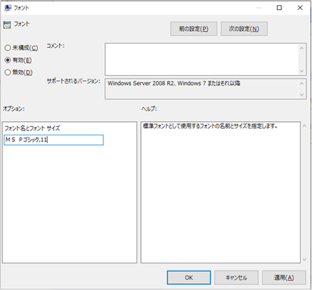
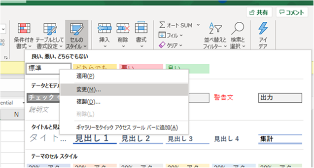
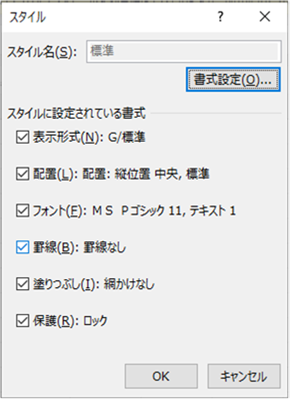
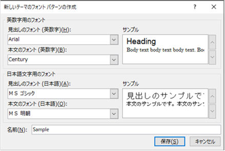
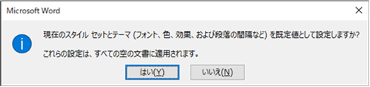
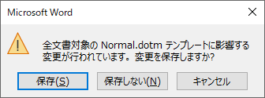
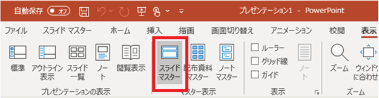
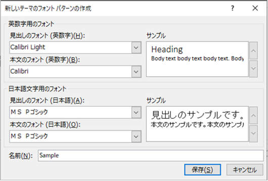

こんにちは、Office サポート チームです。
今回の記事では、Officeの既定のフォントを変更する方法について記載します。
背景
Office 2013 までは、既定のフォントはそれぞれ以下が利用されていました。
Excel : ＭＳ Ｐゴシック
Word : ＭＳ ゴシック (見出し) / ＭＳ 明朝 (本文) (英数字用は Arial (見出し) / Century (本文))
PowerPoint : ＭＳ Ｐゴシック (英数字用は Calibri Light (見出し) / Calibri (本文))
Office 2016 や Office 365 からは、既定のフォントは以下のように游系のフォントに変更されました。
Excel : 游ゴシック
Word : 游ゴシック Light (見出し) / 游明朝 (本文)
PowerPoint : 游ゴシック Light (見出し) / 游ゴシック (本文)
この変更に伴い、以前のフォントと新しいフォントでは文字の高さが違うため、ファイルの内容によっては以下の現象が発生します。
現象
Office 2013 以前の環境と同じ設定で Office 2016 以上 (Office 365 ProPlus 含む) の環境で Excel / Word / PowerPoint ファイルを作成したときに、行の高さが変わったり、ページ数にずれが生じたり、また、レイアウトが崩れたりすることがあります。
補足:
Office 2013 までの環境で作成したファイルを Office 2016 以降の環境で開く場合は、ファイル内にフォントの情報が保持されているため、既定のフォント変更の影響を受けません。この動作は、新しいバージョンの Office でファイルを新しく作成する場合に発生します。
対応方法
以前までの環境と同じフォントが既定で利用されるようにしたい場合、アプリケーションによって設定方法が異なります。設定方法を以下に順に記載します。
目次
1. Excel
1-1. Excel 内での新規作成
1-2. エクスプローラなどでの右クリックからの新規作成
2. Word
2-1. Word 内での新規作成
2-2. エクスプローラなどでの右クリックからの新規作成
3. PowerPoint
3-1. PowerPoint 内での新規作成
3-2. エクスプローラなどでの右クリックからの新規作成
1. Excel
1-1. Excel 内での新規作成
まず、Excel のメニュー内 [新規] から新しく空白のブックを作成するときの既定のフォントを変更する方法を紹介します。
Excel のオプションで、[全般] – [新しいブックの作成時] の [次を既定フォントとして使用] で “ＭＳ Ｐゴシック” を設定します。

以下のグループポリシーでも設定できます。
[ユーザーの構成] – [管理用テンプレート] – [Microsoft Excel 2016] – [Excel のオプション] – [全般] – [フォント]

別案:
標準フォントに “ＭＳ Ｐゴシック” を設定したテンプレート ファイルを作成し、既定のテンプレートとして利用されるよう構成することもできます。
以下の 1-2. で説明する方法で標準スタイルのフォントを変更したファイルを、ファイルの種類を [Excel テンプレート (*.xltx)] で、[Book.xltx] という名前でデスクトップなどに保存します。
この [Book.xltx] を、Excel の起動時に自動的にファイルが開かれるフォルダに格納します。一般的には、%userprofile%\AppData\Microsoft\Excel\XLSTART フォルダに格納しますが、任意のフォルダを指定することもできますので、詳細は以下の公開情報をご参照ください。
参考) Excel の起動方法をカスタマイズする
https://support.office.com/ja-jp/article/6509b9af-2cc8-4fb6-9ef5-cf5f1d292c19
ただし、Excel のスタート画面上 ([ファイル] タブで表示される BackStage メニュー) で [新規作成] から作成するファイルには、このテンプレートは反映されません。このため、合わせて以下の設定でスタートメニューを無効化し、Excel 起動時に自動的に新規ブックが作成されるようにします。この場合は Book.xltx を基に新規ブックが作成されます。(また、Ctrl+N ショートカット キーでの作成も Book.xltx が利用されます。ただし、1 度 Excel を起動した後、ユーザーがさらに [ファイル] タブ - [新規作成] から作成したり、もう 1 度 Excel ショートカットから起動するシナリオは、この方法ではカスタマイズできません。このシナリオは先述のオプションで制御してください。)
設定項目
[ファイル] タブ - [オプション] - [基本設定] - [このアプリケーションの起動時にスタート画面を表示する] のチェックを無効にします。
グループポリシーでは、以下項目で設定できます。
[ユーザーの構成]
- [管理用テンプレート]
- [Microsoft Excel 2016]
- [その他]
- [Excel の Office スタート画面を無効にする]
補足)
スタートメニューを残したままでも、個人用テンプレートとして上記内容を保存して、ユーザーが新規作成時にその個人用テンプレートを選択する、という運用も可能です。
1-2. エクスプローラなどでの右クリックからの新規作成
デスクトップなどで右クリックし、右クリック メニューの [新規作成] から Excel ワークブックを作成するときは、所定のフォルダに格納されたテンプレートをコピーしてブックが作成されます。この操作手順で作成されるブックの既定のフォントを変更する場合は、テンプレートの内容を変更するため、以下の手順を実施します。
新規の空白ブックを作成し、[ホーム] タブ - [セルのスタイル] - [標準] を右クリックし、[変更] をクリックします。

[書式設定] をクリックし、[フォント] を “ＭＳ Ｐゴシック” に設定して [OK] をクリックします。

参考) セル スタイルを適用、作成、または削除する
https://support.office.com/ja-jp/article/472213bf-66bd-40c8-815c-594f0f90cd22
ブックを [Excel ブック (*.xlsx)] 形式で “EXCEL12.XLSX” という名前でデスクトップなどに保存します。
EXCEL12.XLSX を以下のフォルダに格納します。(元々存在する EXCEL12.XLSX と置き換えます。)
<MSI インストーラ形式の Office の場合>
%Windir%ShellNew
<クイック実行形式の Office の場合>
C:\Program Files\Microsoft Office\root\VFS\Windows\SHELLNEW (OS と Office が同じ bit の場合)
C:\Program Files (x86)\Microsoft Office\root\VFS\Windows\SHELLNEW (64 bit OS + 32 bit Office の場合)
2. Word
2-1. Word 内での新規作成
Word の [新規] メニューから新しく空白の文書を作成するときの既定のフォントをカスタマイズするには、既定のテンプレート ファイル”Normal.dotm” ファイルを変更して各ユーザーに配布します。
Normal.dotm ファイルを作成する
Word の新規文書を作成し、[デザイン] - [フォント] - [フォントのカスタマイズ] で以下のフォントを設定して保存します。名前の設定は任意の名前で構いません。

[デザイン] - [フォント] で手順 1 で作成したユーザー定義のフォントを選択した後、[既定に設定] をクリックし、下記のメッセージが表示されたら、[はい] をクリックします。

Word を終了します。終了時に以下のダイアログが表示される場合は、[保存] をクリックします。

参考)
Word で既定のフォントを変更する
https://support.office.com/ja-jp/article/2f50603b-9886-47e4-a483-48ac5ab80163
標準テンプレート (Normal.dotm) を変更する
https://support.office.com/ja-jp/article/06de294b-d216-47f6-ab77-ccb5166f98ea
作成した Normal.dotm ファイルを既定として展開する
上記手順で Normal.dotm ファイルに変更内容が自動的に反映されますので、このファイルをユーザーに展開します。Normal.dotm ファイルは、既定では以下のフォルダに格納されています。
%appdata%\Microsoft\Templates\Normal.dotm
注: ユーザーが既に Normal.dotm ファイルに変更を加えている場合、上記で変更した Normal.dotm を展開するとユーザーの設定は上書きされます。
2-2. エクスプローラなどでの右クリックからの新規作成
Word では、右クリックからの新規作成時は空の文書が作成され、Normal.dotm の設定が反映されますので、2-1. の対応のみで右クリックからの新規作成もカスタマイズできます。
3. PowerPoint
3-1. PowerPoint 内での新規作成
PowerPoint の [新規] メニューから作成できる “新しいプレゼンテーション” は、カスタマイズすることができません。代わりに、スタート画面のテンプレートの一覧の先頭に既定のフォントのカスタマイズを加えたテンプレートを表示する方法を紹介します。
テンプレート ファイルを作成する
PowerPoint を起動して新規プレゼンテーションを作成し、[表示] タブ - [マスター表示] カテゴリ - [スライドマスター] を開きます。

[スライドマスター]タブ - [背景] カテゴリ - [フォント] をクリックし以下のフォントを設定して保存します。名前の設定は任意の名前で構いません。

プレゼンテーションを、[PowerPoint テンプレート (*.potx)] 形式で “Default Theme.potx” という名前でデスクトップなどに保存します。
参考) PowerPoint で既定のフォントを変更する
https://support.office.com/ja-jp/article/8e93c947-c160-4310-8070-afea7da78c33
potx ファイルを展開する
作成した Default Theme.potx をユーザーの以下のフォルダに格納します。
%appdata%\Microsoft\Templates\Document Themes
この設定を行うと、PowerPoint のスタート画面のテンプレートの一覧先頭に “Default Theme” というテーマが表示されます。これを選択してプレゼンテーションを作成すると、変更したフォントが利用されます。なお、先述の通り、既定の空白プレゼンテーション用テンプレート “新しいプレゼンテーション” を削除したり、この内容を変更することはできません。
注: ユーザーが既に Default Theme.potx ファイルを作成してカスタマイズを行っている場合、上記で変更した Default Theme.potx を展開するとユーザーの設定は上書きされます。
3-2. エクスプローラなどでの右クリックからの新規作成
デスクトップなどで右クリックし、右クリック メニューの [新規作成] から PowerPoint プレゼンテーションを作成するときは、既定では空のファイルを作成し、このテンプレートを利用しないため設定が反映されません。右クリックで作成されるプレゼンテーションの既定のフォントを変更する場合は、以下の手順を実施します。
ひな形ファイルを作成
3-1. の設定後、”Default Theme” を選択して新規プレゼンテーションを作成し、そのままデスクトップなどに、[PowerPoint プレゼンテーション (*.pptx)] 形式で “PWRPNT12.PPTX” というファイル名で保存します。
作成者の個人情報を削除するため、[ファイル]タブ - [情報] - [問題のチェック] - [ドキュメント検査] - [検査] をクリックし、”ドキュメントのプロパティと個人情報” にて [すべて削除] をクリックしてダイアログを閉じた後、ファイルを上書き保存します。
ひな形ファイルの展開
PWRPNT12.PPTX を以下のフォルダに格納します。
<MSI インストーラ形式の Office の場合>
%Windir%ShellNew
<クイック実行形式の Office の場合>
C:\Program Files\Microsoft Office\root\VFS\Windows\SHELLNEW (OS と Office が同じ bit の場合)
C:\Program Files (x86)\Microsoft Office\root\VFS\Windows\SHELLNEW (64 bit OS + 32 bit Office の場合)
次に、以下のレジストリを追加します。
キー : HKEY_LOCAL_MACHINE\SOFTWARE\Classes\.pptx\PowerPoint.Show.12\ShellNew
名前 : FileName
種類 : REG_SZ
データ : PWRPNT12.PPTX を格納したフルパス
(例) C:\Program Files (x86)\Microsoft Office\root\VFS\Windows\SHELLNEW\PWRPNT12.PPTX
さらに、以下のレジストリを削除、またはリネームします。
キー : HKEY_LOCAL_MACHINE\SOFTWARE\Classes\.pptx\PowerPoint.Show.12\ShellNew
名前 : NullFile
種類 : REG_SZ
注:
HKEY_LOCAL_MACHINE 配下の値は、 Office の修復や更新により既定の値に変更される場合があります。最終的に、HKEY_CURRENT_USER\SOFTWARE\Classes 配下とマージされて HKEY_CLASSES_ROOT に反映された内容が Office アプリケーションの動作で利用されます。
このため、HKEY_CURRENT_USER\SOFTWARE\Classes\.pptx 配下に値を設定することもできます。(既定では、HKEY_CURRENT_USER にはこのレジストリはありません。) この場合、ユーザーごとに設定が必要ですが、Office の修復や更新では変更されません。
今回の投稿は以上です。
本情報の内容 (添付文書、リンク先などを含む) は、作成日時点でのものであり、予告なく変更される場合があります。